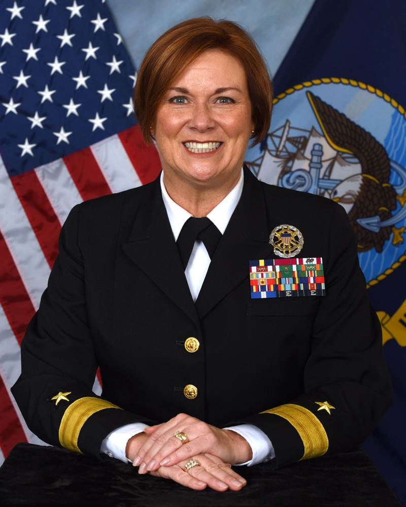

Lifting Up The Next Generation Of Women Leaders
- Written by MCCM(SW/AW/EXW) Jon McMillan
- with RDML Dawn Cutler
- Delivered by RDML Cutler at the Joint Women’s Leadership Symposium
- Norfolk, VA
- June 16, 2017

RDML Dawn Cutler
Thank you. What an incredible honor to be here this morning. Thank you [introduction] and a very big thank you to [coordinator] for this amazing program. As I was looking through the schedule of events, I saw you have a session later today called “Lifting Up the Next Generation of Women”. A diverse panel of smart, strong and dedicated Navy leaders -- all of whom are women -- are leading that discussion. I believe it’s an incredibly important topic because, if there’s anything I’ve learned in my 26 years of Naval service, it's none of us get where we’re at alone. And in my life, perhaps one of the most personally rewarding challenges I faced came not from a war, not on the ocean, and not in the corridors of the Pentagon. It came from completing a 12-mile Icy-water Mud-packed Electric-shock-filled “Why am I doing this?” extreme endurance event. [pause] With a group of Swim Moms. Before I did that event, I could have never imagined myself participating in an extreme obstacle course. I don’t like mud. I don’t like being cold. and I don’t particularly like being shocked. By anything. But there we were. I was watching my daughters Alexis, then 16, Shannon and Danielle, my twins, then 13, at swim team practice in Naples, Italy and I agreed to join a team of Swim Moms to do an upcoming Tough Mudder in London.
--- PREPARATION/GOALS ---
I need to be honest with you all, I was scared to death about running that course. I had no idea what I was really getting myself into but I knew I wanted to train hard and prepare myself for that event. I had to make a very conscious decision to make time to do this -- you know, life gets crazy-busy with work, three girls, a husband and a dog. But I chose to make this a priority because I wanted this for me and our team. Goals are important to me. I believe it’s important to clearly identify what you want to achieve. If you can envision the end-state you desire, you can then focus your energy and efforts to achieve it. I also believe that the best goals need to be big. They should be challenging and feel just out of reach. For this Tough Mudder, our goal was to simply finish the event. Just committing to this pushed us out of our comfort zone. We weren’t extreme racers. We weren’t fitness fanatics. We were swim Moms. and, in the end, we wanted to finish together.
--- DEFINING DEFEAT ---
With the concept of success clear in my mind, I next needed to identify what defeat would look like. You see, when setting big, ambitious goals -- When shooting for your own “Moonshot” -- It’s quite possible you won’t achieve the stated goal. And that’s okay. It doesn’t mean defeat. The journey itself has immense value. To help deal with all the setbacks in life -- To help understand it’s okay to try, fail and then try again -- To help condition ourselves to an iterative approach to attaining our goals through trial and error, we have to accept that small failures are part of the process, and those failures don’t equal defeat. You see, defeat is a mindset. It happens when you’ve given up and can’t find a lesson to learn in the experience, and can’t find any value in the journey. Our group of Swim Moms knew we might not be able to complete every race obstacle. We knew someone could get hurt and not be able to finish. And we knew that if we faced any of those challenges, We’d be disappointed, But not defeated. Success for us was to finish the course on our own terms, within our own abilities. Defeat could only occur if we didn’t even try, or if we didn’t help each other be our best self on that day. So I trained. We would not be defeated.
--- LIFTING EACH OTHER UP ---
In the end though, none of my training prepared me for that course. The obstacles were more challenging than I’d thought. The water much colder than I thought I could handle. The distance felt much, much, much longer than the stated 12 miles. But we pushed and pulled, Lifted and motivated each other with words and interlocked arms. Each of us made a choice time after time to continue on And earn each step Conquer each obstacle And do something we weren’t 100% sure we could do. We chose to lean on each other when needed And support each other when called upon to finish as a team. It’s been like that throughout my career in the Navy too. All my successes are because someone -- a strong mentor, a caring shipmate, a cohort of women facing the same challenges, opportunities and choices as me, Helped me on the way. It is important for all of us to build plenty of time into our days and weeks for our families, and for us to cultivate and grow strong and enduring relationships with a highly diverse group of shipmates and friends. These relationships, built on a foundation of trust, empathy, respect and synergy, and a belief that the more you give to others the more you’ll receive back in life, provide a strong support network, with a deep bench of knowledge, experiences, and perspectives to guide, correct, lift, push and pull us when needed in life. I am proud of my service to the U.S. Navy and I feel good about my personal accomplishments, But what makes me most proud, touches me to my soul and rewards me beyond any personal accomplishment, is knowing I’ve helped others. Knowing I’ve helped others through challenging moments in their lives, over obstacles they thought they couldn’t pass, and with choices that seemed impossible to navigate, Those are what I count as my most rewarding successes. It is meaningless to reach the top of anything and stand there alone. There is no victory if there is no one to share it with. And no victory is worth celebrating If you can’t help others join you at the top.
--- Conclusion ---
Climbing up that Tough Mudder wall was like that. It took all of us to make it up that muddy, slippery, seemingly impossible obstacle. We pushed and pulled each other up and over. It took time. And many falls. But we did it. And when the last of us reached that top -- we knew we could do anything. As I look around this room, I see an amazing group of Servicewomen, and opportunity after opportunity for each of you to add to your own network of diverse friends, shipmates and mentors. All that’s left is to choose your next big goal; To set your own ‘Moonshot’; start working to achieve it. And help others achieve theirs. To push and pull, Lift and motivate each other Help with the next step and guide someone over their next obstacle. If you’re first to the top, reach down and pull someone up with you. And if you’re still climbing and someone is ahead, do what you can to push them further. We’re in this together… and we can all reach the top -- achieve our goals -- by Lifting Up and helping the Next Generation Of Women Leaders. Thank you.